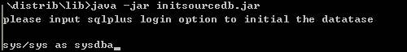

Dib(数据集成总线)不仅具有强大的ETL功能，另外一大特色就是CDC(Change Data Capture)，基于增量数据，用于实时数据集成，特点有：
• 基于日志分析，对生产库的压力极小
• 高实时性
• 基于增量
• 安全可靠
首先确保您的计算机上已经安装了JDK和sqlplus并设置了ORALE_SID环境变量。
<DIB安装目录>/lib/initsourcedb.jar是一个可独立运行的jar，可在lib目录下运行java -jar initsourcedb.jar，如图：

然后按照提示完成配置。默认创建的DIB系统用户名为DIBADMIN，事务引擎连接到源数据库的数据源必须使用此配置好的用户。
在目标用户下创建下列表，此用户用于创建数据源连接到目的数据库。
Oracle脚本
CREATE TABLE V_DIB_TARGET_LOG (
SERVICE_NAME varchar(64) NOT NULL ,
XID varchar(16) DEFAULT NULL,
BRANCHID NUMBER(18,0) DEFAULT 0,
BRANCHN NUMBER(18,0) DEFAULT 1,
SCN number(38,0),
THREADN number(18,0),
BRANCHSET varchar(1024)
)
PostgreSQL脚本
CREATE TABLE v_dib_target_log (
SERVICE_NAME character varying(64) NOT NULL,
XID character varying(16) NOT NULL,
BRANCHID numeric(18,0) DEFAULT 0,
BRANCHN numeric(18,0) DEFAULT 1,
SCN numeric(38,0),
THREADN numeric(18,0),
BRANCHSET character varying(1024)
);
MySQL脚本
CREATE TABLE v_dib_target_log (
SERVICE_NAME varchar(64) NOT NULL,
XID varchar(16) DEFAULT NULL,
BRANCHID decimal(18,0) DEFAULT 0,
BRANCHN decimal(18,0) DEFAULT 1,
SCN decimal(38,0) DEFAULT NULL,
THREADN decimal(18,0) DEFAULT NULL,
BRANCHSET varchar(1024) DEFAULT NULL
)
运行dabi.bat，出现资源库配置对话框：
点击右上角的，如图：
选择文件类型的资源库，点击确定，
选择资源库目录，ID和Name都输入Main，点击确定，之后自动进入开发管理界面。
dibserver.bat 127.0.0.1 2012
运行dabi.bat， 切换到Deltad perspective，在地址栏输入ip地址和端口号，点击Go！
点击Wizard按钮，从菜单中选择DataSource,如图：
填写数据源名称，数据库类型，数据库名，用户名，密码，点击Add按钮添加主机名，端口号，还可以支持OracleRAC连接的配置，然后点击Test测试连接，测试通过后可以点击Deploy来部署这个数据源。部署以后可以双击打开这个数据源，点击ViewSchema来查看其中的用户和表的信息。
注意：用于事务引擎，这里的用户名必须是DIB系统用户名，是我在前面初始化数据库的时候创建的。默认是DIBADMIN。
双击左边导航树中的Transaction Engine
进入事务引擎配置界面：
选择数据源：
点击wizard，选择Engine Service
进入Service配置界面
双击列表中的Schema，其下的表名会出现在中间的列表中，选择要被捕捉的表，点击->按钮，选入右边的列表中。
填入service名称，并点击Submit
然后回到Transaction Engine窗口，点击Regression按钮，然后点击Save按钮，然后关闭并重新双击打开Transaction Engine，可以看到右下方的Regression表格中已经出现了归约后的table列表。
用同样的办法，用户可以创建多个Service，并重新归约。
注：归约是将Transaction Engine 的所有Service的表进行归纳总结的结果。
点击Start即可启动事务引擎，启动后按钮文字会变成Stop。
Trouble Shooting：
如果后台报告异常“表或视图不存在”，那么说明事务引擎的数据源对应的用户或者数据库没有配置正确。
切换到Data Integration perspective，并创建转换
Deltad转换组
拖拽DeltaTXInput转换控件到设计区，这个控件用于从消息队列接收增量数据，消息是由Transaction Engine产生的。并双击显示属性对话框
注意这里Destination的规则是前面我们配置的事务服务名service1加前缀“DefaultTransactionEngine_”。配置好后点击OK。
再拖拽DeltaTXTransform转换控件到设计区，这个控件用于对接收到的增量数据做一些简单的转换，双击图标打开对话框
这里我们选择TableMirroringInterceptor，只做简单的Schema映射，也就是将源表的schema名映射的目的数据库的schema。（这里我们假设用户已经在目的数据库的schema TARGETHR下已经创建了对应的表结构），点击OK。
最后拖拽DeltaTXExecutor转换控件到设计区，这个控件用于将转换后的增量数据执行到目的数据库。
首先点击New按钮，创建目的数据库连接，其他的用默认设置即可，点击OK。
最后将三个控件顺序连接起来，按住鼠标中间滚轮，从源控件连接到目的控件。连接好以后，如图：
保存转换后点击执行这个转换。
这时我们往刚才选择的那些表中增加或者修改一些记录，稍后，再到目的数据源的schema下查看对应的表，发现变动已经同步过去了。